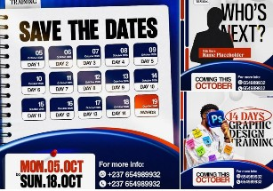
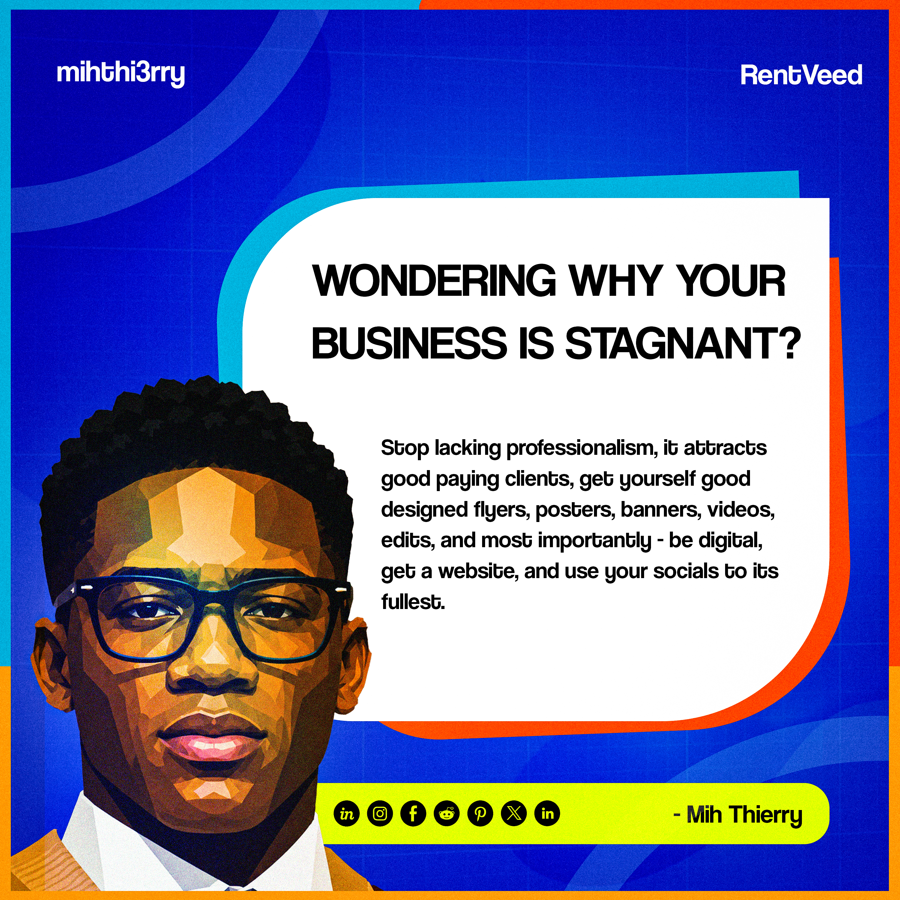
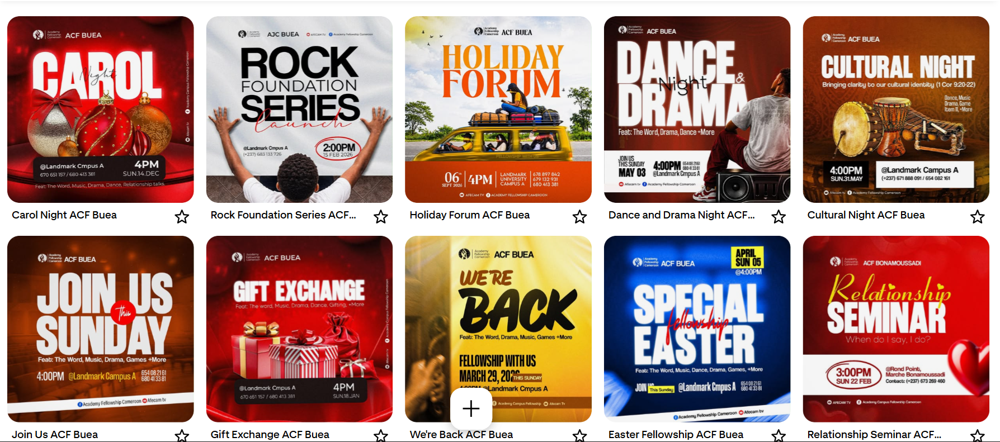
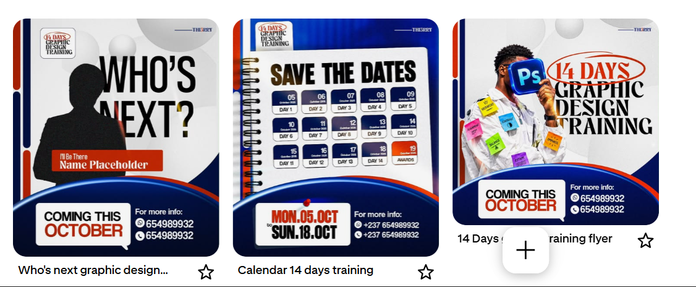

Branding and Design.
Photoshop, branding and graphics. Posters and identities that grew communities.


ACF Buea design board
10+ designs over two years that widened the fellowship’s reach to local youth.

Cre8tive Designers Hub
I lead online graphic design training so young people can earn from design while still in school.

Boards and inspiration
My Pinterest holds the references, layouts and color studies behind my branding and design work.
Open my Pinterest